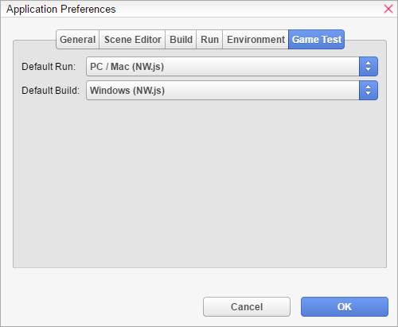

Y
<html>
<head>
<meta content="text/html; charset=utf-8" http-equiv="Content-Type"/>
<meta content="Adobe RoboHelp 2015" name="generator"/>
<title>ou 可以通过打开</title>
<link href="default.css" rel="StyleSheet" type="text/css"/>
<script language="JavaScript" type="text/javascript">
//<![CDATA[
function reDo() {
  if (innerWidth != origWidth || innerHeight != origHeight)
     location.reload();
}
if ((parseInt(navigator.appVersion) == 4) && (navigator.appName == "Netscape")) {
	origWidth = innerWidth;
	origHeight = innerHeight;
	onresize = reDo;
}
onerror = null; 
//]]>
</script>
<style type="text/css">
<!--
div.WebHelpPopupMenu { position:absolute;
left:0px;
top:0px;
z-index:4;
visibility:hidden; }
p.WebHelpNavBar { text-align:right; }
-->
</style>
<script src="template/scripts/rh.min.js" type="text/javascript"></script>
<script src="template/scripts/common.min.js" type="text/javascript"></script>
<script src="template/scripts/topic.min.js" type="text/javascript"></script>
<script src="template/scripts/constants.js" type="text/javascript"></script>
<script src="template/scripts/utils.js" type="text/javascript"></script>
<script src="template/scripts/mhutils.js" type="text/javascript"></script>
<script src="template/scripts/mhlang.js" type="text/javascript"></script>
<script src="template/scripts/mhver.js" type="text/javascript"></script>
<script src="template/scripts/settings.js" type="text/javascript"></script>
<script src="template/scripts/XmlJsReader.js" type="text/javascript"></script>
<script src="template/scripts/loadparentdata.js" type="text/javascript"></script>
<script src="template/scripts/loadscreen.js" type="text/javascript"></script>
<script src="template/scripts/loadprojdata.js" type="text/javascript"></script>
<script src="template/scripts/mhtopic.js" type="text/javascript"></script>
<link href="template/styles/topic.min.css" rel="stylesheet" type="text/css"/>
<script type="text/javascript">
gRootRelPath = ".";
gCommonRootRelPath = ".";
gTopicId = "2.4.0_5";
</script>
<meta content="Exploring the Editor &gt; Build &amp; Run" name="topic-breadcrumbs"/>
</head>
<body>
<script src="./ehlpdhtm.js" type="text/javascript"></script>
<div id="header" style="width: 100%; position: relative;">
<h2 style="font-family: 'Book Antiqua', serif; margin-bottom: 7pt; font-size: 24pt;">应用程序偏好设置</h2>
<hr align="left" width="60%"/>
</div>
<p> </p>
<p><span class="Topic_Start">（通过</span>菜单栏<a href="Application_Preferences.htm">）并转到“游戏测试”选项卡来配置你的游戏默认如何构建和运行。</a>默认运行 - 当你从<a href="The_Menu_Bar.htm">菜单栏</a>或</p>
<p> </p>
<p></p>
<p> </p>
<ul style="list-style: disc;">
<li>工具栏<a href="The_Menu_Bar.htm">选择“播放”时使用的默认运行配置。</a>默认构建 - 当你从<a href="The_Toolbar.htm">菜单栏</a>选择“构建”时使用的默认构建配置。</li>
<li>HTML<a href="The_Menu_Bar.htm">入门</a>构建与运行</li>
</ul>
<p> </p>
</body>
</html>
